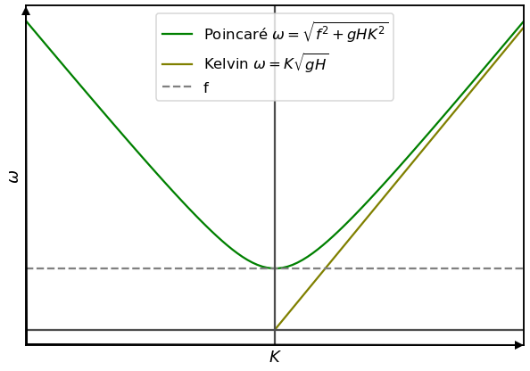
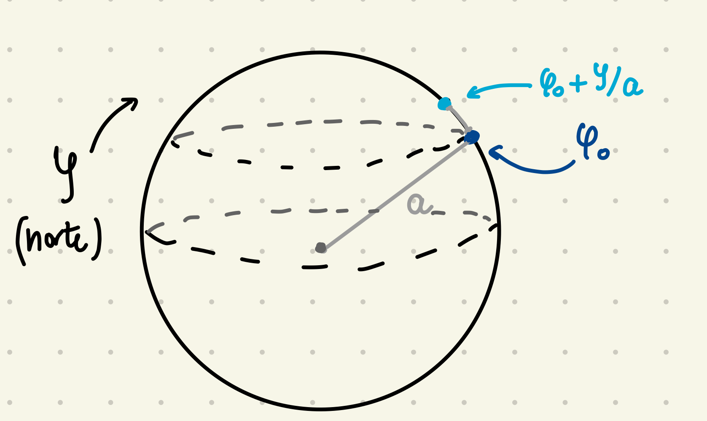
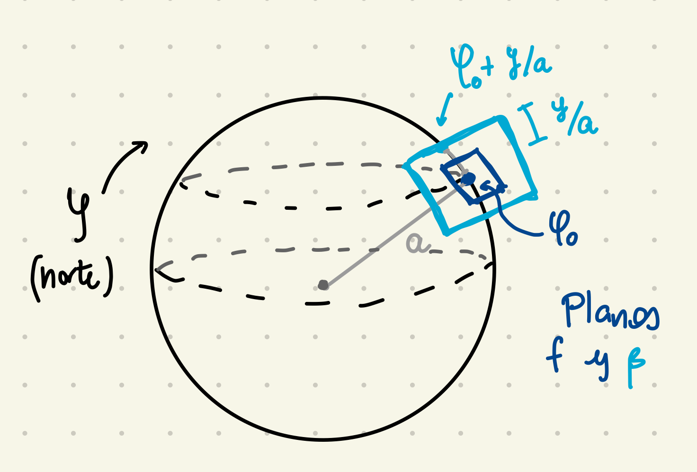
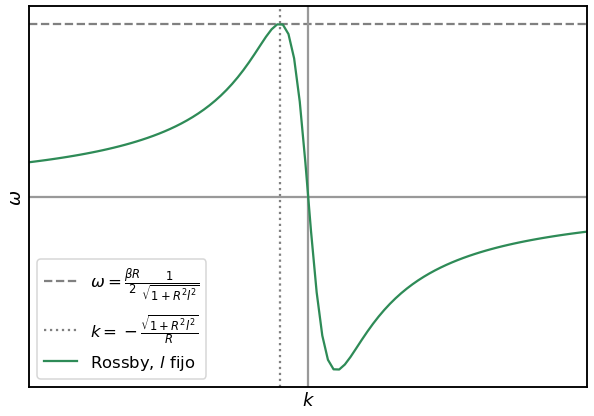
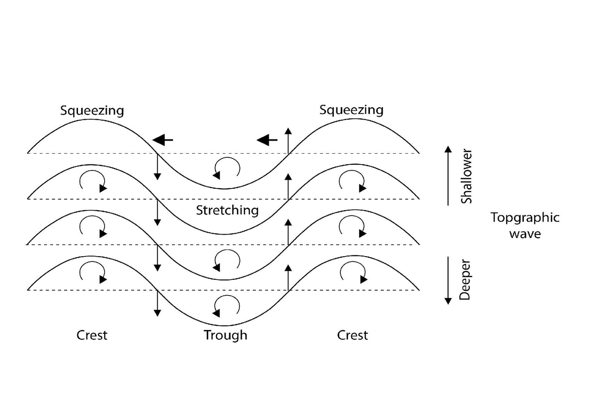

class: center, middle <br/><br/> .title[Dinámica de Fluidos Geofísicos] .subtitle[Ondas Barotrópicas II (planetarias y topográficas)] <br/><br/> .author[Semestre 2024-I] .institution[Facultad de Ciencias] <br/> .date[9 de noviembre de 2023] <br/><br/> <img style="width:100%" src="./figures/green_waves.png"> <!-- .note[Created with [{Liminal}](https://github.com/jonathanlilly/liminal) using [{Remark.js}](http://remarkjs.com/) + [{Markdown}](https://github.com/adam-p/markdown-here/wiki/Markdown-Cheatsheet) + [{KaTeX}](https://katex.org)] --> --- name: toc class: left <img style="width:40%" src="./figures/ink.jpg"> #Contenido 1. [El plano $\beta$](#beta) 1. [Ondas de Rossby o planetarias](#rossby) 1. [Ondas topográficas](#topograficas) <!-- Comment out the next slide if you don't want the Table of Contents link --> --- layout: true .toc[[✧](#toc)] --- class: left Las ondas de Kelvin y Poincaré son relativamente rápidas. ¿Puede ser que un fluido homogéneo en rotación admita ondas más lentas? Por ejemplo, la evolución muy lenta de los flujos geostróficos (correspondientes a la solución $\omega=0$) bajo una perturbación pequeña podría tener $\omega$ cerca de 0. .center[] Otra forma de plantearlo es que hemos mantenido f constante y la ondas que hemos encontrado tienen \omega > f. Veamos ahora qué pasa cuando dejamos que f varíe con la latitud. --- class: left name: beta ## Aproximación de plano $\beta$ Hasta ahora hemos usado que $f=2\Omega\sin{\varphi_0}$. Fenómenos de gran escala como patrones de ciclones y anticilones, (en menor medida) meandros de una corriente como la del Golfo abarcan varios grados de latitud. Debemos considerar variaciones latitudinales (meridionales) de $f$. .center[] --- class: left Si $y/a$ es una perturbación latitudinal "pequeña", donde $a$ es el radio de la Tierra y $y$ es una distancia meridional, podemos expandir el parámetro de Coriolis en una serie de Taylor: $$f=2\Omega \sin{\varphi_0} + 2\Omega \frac{y}{a} \cos{\varphi_0}+ ...$$ Reteniendo solo los primeros dos términos, escribimos a $f$ como $$f=f_0+\beta_0y,$$ donde $f_0=2\Omega\sin{\varphi_0}$ y $\beta_0=2(\Omega/a)\cos{\varphi_0}$ es el *parámetro beta*. Aproximaciones (planos tangentes) para $f=2\Omega\sin{\varphi}$: ||| |:-:|:-:| |**plano-f:** | $f=2\Omega\sin{\varphi_0}$| |**plano-$\beta$:** | $f=f_0+\beta_0y$| Siguiente orden de precisión es usar toda la geometría esférica. --- class: left Plano-$\beta$ solo es válido para latitudes medias solo si $\beta_0y << f_0 $. Esto nos da una restricción en la escala meridional $L$ del movimiento: $$\beta=\frac{\beta_0L}{f_0}<<1.$$ El cociente $\beta$ se conoce como *número o parámetro planetario*. .center[] --- class: left name: rossby ## Ondas de Rossby o planetarias * Escalas espaciales muy grandes * En la atmósfera solo caben unas cuantas longitudes de onda --> ondas planetarias * En el océano $\lambda \sim 100$ km. * Sus frecuencias obedecen $\omega << f$ --> variación temporal muy pequeña, balance cuasi-geostrófico .center[<video preload="auto" width="60%" height="auto" data-setup="{}" autoplay loop controls> <source src="./videos/jetstreamanimation_NASA.mp4" type="video/mp4" /></video> .caption[[Video de NASA's Goddard Space Flight Center](https://oceanservice.noaa.gov/facts/rossby-wave.html) muestra ondas largas y cortas de Rossby en la corriente de chorro (jetstream) en junio-julio 1998.]] --- class: left ## Relación de dispersión Vamos a las notas... .center[] --- class: left Ondas de Rossby - vorticidad <iframe width="560" height="315" src="https://www.youtube.com/embed/nwyd5_8eIMM" title="YouTube video player" frameborder="0" allow="accelerometer; autoplay; clipboard-write; encrypted-media; gyroscope; picture-in-picture" allowfullscreen></iframe> Activar subtítulos en Español Si no funciona el link es [este](https://youtu.be/nwyd5_8eIMM) --- class: left name: topograficas ## Ondas topográficas Vamos a las notas... .center[] .caption[Imagen de wikipedia. Mecanismo de propagación de ondas topográficas.] --- class: left ## Ondas topográficas en un tanque <iframe width="560" height="315" src="https://www.youtube.com/embed/dugQcZ3-Ci8?si=SXExR38vIEX1Q5Id" title="YouTube video player" frameborder="0" allow="accelerometer; autoplay; clipboard-write; encrypted-media; gyroscope; picture-in-picture; web-share" allowfullscreen></iframe> .caption[Video de Brian Rose] --- class: left ## Referencias: Cushman-Roisin y Beckers - Capítulo 9 Kundu y Cohen - Capítulo 14-10 al 14-15 ## Videos: https://youtu.be/MzW5Isbv2A0 Rossby waves and extreme weather - Potsdam Institute for Climate Impact Research PIK https://youtu.be/nwyd5_8eIMM Olas de Rossby en los océanos: por qué se forman y cómo se mueven (Inglés con subtítulos en Español) Science Primer Ondas de Rossby (Nick Hall con subtítulos) https://youtu.be/pwV54L-NXzM Ondas Ecuatoriales (Nick Hall con subtítulos) - les puede servir para el problema 1 de la tarea https://youtu.be/YZ6wwynTiZ8 </br></br></br></br></br></br></br></br> .note[Notas creadas con [{Liminal}](https://github.com/jonathanlilly/liminal) usando [{Remark.js}](http://remarkjs.com/) + [{Markdown}](https://github.com/adam-p/markdown-here/wiki/Markdown-Cheatsheet) + [{KaTeX}](https://katex.org)]